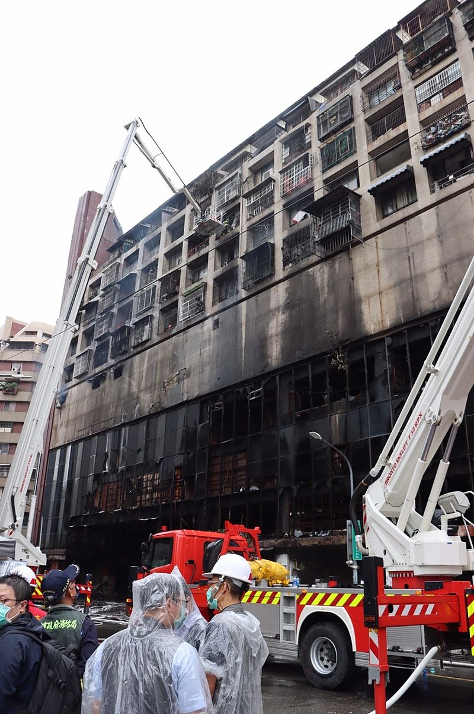
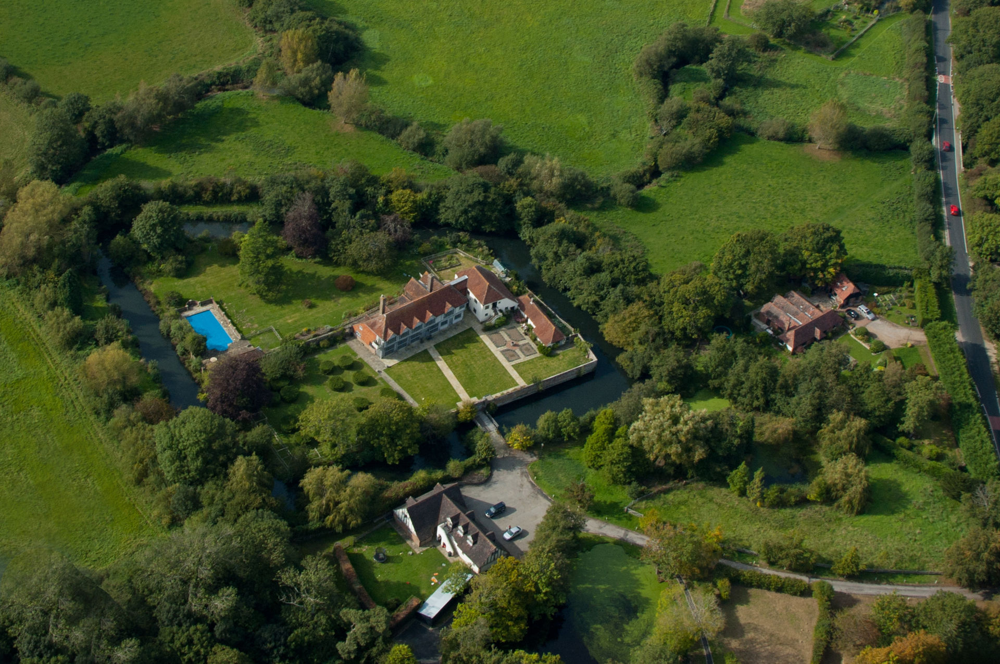
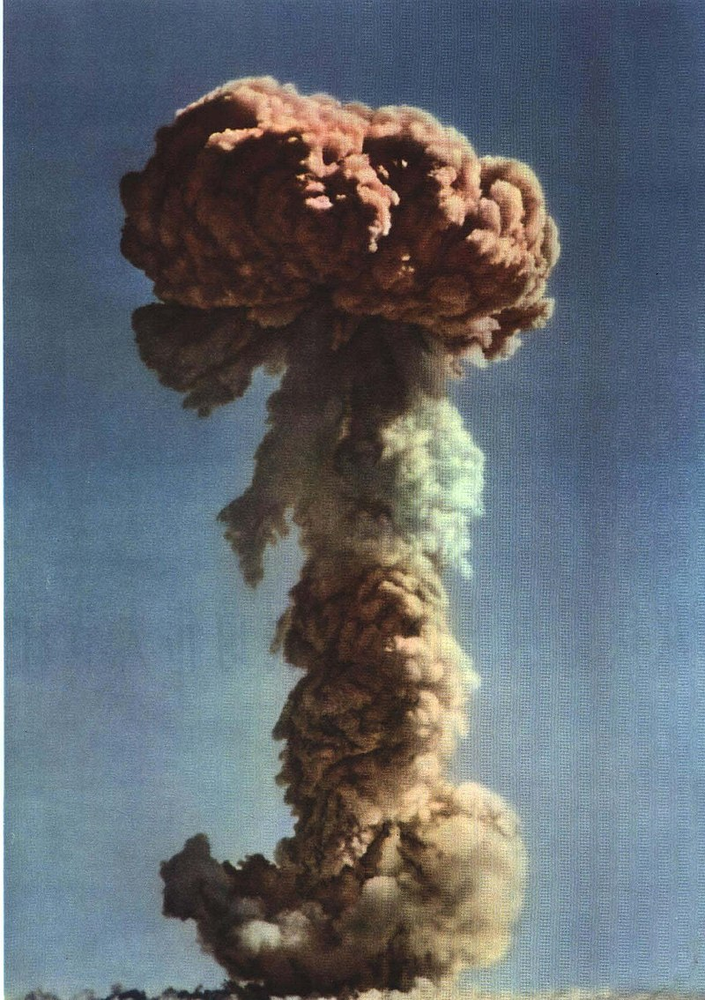

On 15 October 2021, Sir David Amess, the British Conservative Party Member of Parliament (MP) for Southend West, died after being stabbed multiple times during a constituency meeting in Leigh-on-Sea. A 25-year-old man, reportedly British Somali, was arrested at the scene on suspicion of murder. Police said that they were investigating the stabbing as a terrorist incident.
The incident was the first killing of a sitting British MP since the murder of Jo Cox in June 2016.
In the early morning hours of 14 October 2021, at 02:54 NST (UTC+8), a fire broke out in a 13-floor building in the Yancheng District of Kaohsiung in southwestern Taiwan. At least 46 people died and 41 others were injured. The fire was extinguished after about four and a half hours. The cause of the fire is under investigation, although piles of debris left around the building may have complicated rescue efforts and helped fuel the fire.
It is the deadliest fire in the city's history, and the deadliest building fire in Taiwan since 1995, when a karaoke bar in Taichung in central Taiwan caught on fire, killing 64 people and overall the third-deadliest fire in the history of Taiwan.

The bow and arrow is a ranged weapon system consisting of an elastic launching device (bow) and long-shafted projectiles (arrows).
Archery is the art, practice, or skill of using bows to shoot arrows. A person who shoots arrows with a bow is called a bowman or an archer. Someone who makes bows is known as a bowyer,someone who makes arrows is a fletcher, and someone who manufactures metal arrowheads is an arrowsmith.
Humans used bows and arrows for hunting and aggression long before recorded history, and the practice was common to many prehistoric cultures. They were important weapons of war from ancient history until the early modern period, where they were rendered increasingly obsolete by the development of the more powerful and accurate firearms, and were eventually dropped from warfare. Today, bows and arrows are mostly used for hunting and sports.
Horselunges Manor is a 15th-century house in Hellingly, East Sussex, that was restored in the 20th-century. The house was previously owned by Peter Grant, the manager of Led Zeppelin, and featured in the film The Song Remains the Same about the band. Horselunges Manor is a Grade I listed building.
It was built in the late 15th-century by John Devenish, whose family owned the house for a number of generations.The house is situated in Hellingly, East Sussex, around 300 metres from the parish church and 3.2 km from Hailsham. The name is believed to come from the phrase "Hurst-longue", which means "entrance into the wood".
In 1541, Thomas Fiennes, 9th Baron Dacre killed a servant near Horselunges Manor, and was hanged for the crime. He was the first noble executed for killing a commoner.

Project 596, as code word,Chic-1 by the US intelligence agencies was the first nuclear weapons test conducted by the People's Republic of China, detonated on 16 October 1964, at the Lop Nur test site. It was a uranium-235 implosion fission device made from weapons-grade uranium (U-235) enriched in a gaseous diffusion plant in Lanzhou.The atomic bomb was a part of China's "Two Bombs, One Satellite" program. It had a yield of 22 kilotons, comparable to the Soviet Union's first nuclear bomb RDS-1 in 1949 and the American Fat Man bomb dropped on Nagasaki, Japan in 1945. With the test, China became the fifth nuclear power in the world and the first Asian nation to possess nuclear capability. This was the first of 45 successful nuclear tests China conducted between 1964 and 1996, all of which occurred at the Lop Nur test site.
